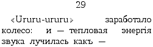
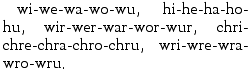
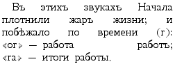
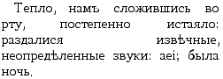

Page index / gl
Glossolalia (Section 29)
GLOSSOLALIA

29
"Ururu-ururu" the wheel began laboring: and -- the thermal energy of sound radiated like --



The warmth, which had composed in our mouths, was gradually melting: æternal, indeterminate sounds resounded: aei; it was night.